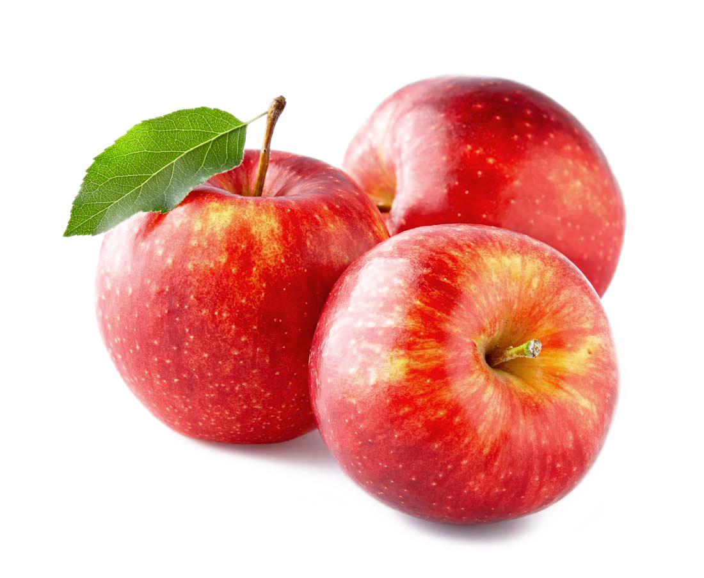

Среди фруктов яблоко является очень распространённым продуктом и практически целый год присутствует в нашем рационе питания.
Ценность яблок кроется в их составе. Почти 80% яблок составляет вода. Остальная часть приходится на клетчатку, органические кислоты, углеводы. Яблоки содержат массу органических кислот: яблочную, винную, лимонную, но при этом в них довольно мало витамина С. Зато есть другие антиоксиданты – витамин А.
Кислоты помогают пищеварению , особенно при низкой кислотности желудка. Если кислот недостаточно, организм не может полноценно переварить пищу и усваивает не все полезные вещества. В составе много лёгких сахаров. Особенно хорошо они усваиваются из сушеных плодов. Однако, самыми полезными считаются свежесобранные яблоки. Именно в них концентрация полезных веществ достигает своего максимума.
Также стоит отметить, что яблоки – один из самых безопасных фруктов в плане аллергенности.
При употреблении свежего яблока в организм поступают такие вещества:
Если говорить о калорийности яблок, то этот показатель будет зависеть от того, какого сорта яблоко, и в каких условиях оно было выращено.
В среднем красное яблоко имеет калорийность равную 47 ккал, а зелёное – около 35 ккал. Именно зелёное яблоко рекомендуют употреблять во время диет.
Несмотря на целительные свойства яблок, следует понимать, что всего должно быть в меру. И даже столь полезный фрукт при чрезмерном употреблении может нанести вред. Хотя одно яблоко, съеденное после еды, не навредит даже людям с противопоказаниями. При гастритах можно употреблять только яблоки сладких сортов.
Кислые яблоки содержат много кислот, поэтому употреблять их нужно умеренно, чтобы не повредить зубную эмаль и ЖКТ.
Особо следует сказать об особенностях яблок натощак. Утреннее употребление яблок поможет организму запустить пищеварительные процессы и настроиться на работу. Однако употребление этих плодов натощак недопустимо при гастритах с повышенной кислотностью, язвенных болезнях, желчекаменной болезни.
Польза яблок натощак для похудения также является спорной. С одной стороны – яблоко имеет богатый комплекс питательных веществ, который способен заменить собой прием пищи. С другой стороны – у многих людей яблоко вызывает аппетит, так как раздражает стенки желудка кислотами. Употреблять яблоко натощак или в качестве перекуса во время диеты можно только тем, у кого нет такой особенности организма.
Также следует помнить, что в яблочных семечках присутствует ядовитое вещество - амигдалин, способное привести к отравлению. Однако доза, опасная для человека, очень велика – целая чашка семян. Поэтому, случайно проглотив несколько, не стоит переживать.
Источник информации: Статья